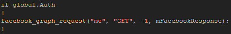

Tutorial
Page 7 of 8
Getting Personal Information
This section is to show one further way that the Facebook graph can be used, again using the facebook_graph_request() function. We
are going to use it along with the App Id to get information about the App and display that on the screen. As with all the previous examples,
lets start by making a new object called "obj_GetPersonal" and giving it a sprite.
The rest of the process is really quite similar to the friends request on the previous page. We need to create a ds_map in the create Event
to hold the json that we expect back from Facebook:
We will also (as before) add a left mouse button PRESSED event with this code:

Notice how this time, instead of a graph path we are sending simply "me". This is accepted by Facebook as the currently logged in user id, but it is worth noting that if you know the id of anyone
or any app on Facebook you can use that here to get information about that entity in the same way.
Now to draw that information on the screen:
The code here is simpler than it was for the friends list as we are only getting back a single ds_map with a number of different keys to it, so we can set up a simple
loop using the "while" statement and draw the key/value pairs stored in this map.
Finally, we should add a line of code to clean up when the object is no longer needed:
If you now run the game again, you will be able to press this button and see information about your game drawn down the right of the screen.
Click on the Next button to go to the next page of the tutorial.